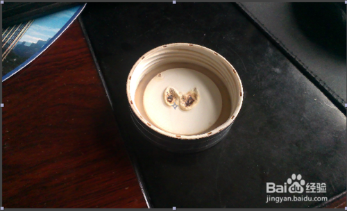
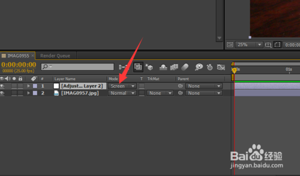
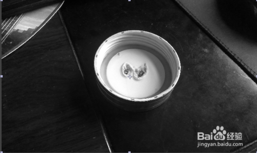
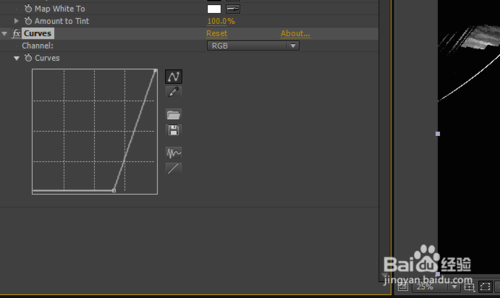
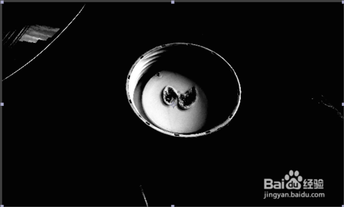
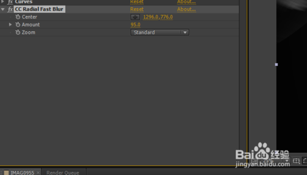
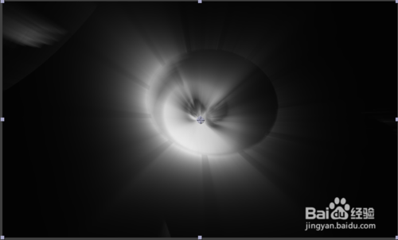
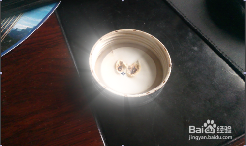

Tip 1:首先找到一个素材，这是我拍摄的一个图片，效果来说，和视频是一样的
Tip 2:然后新建一个调节层，adjustlayer
Tip 3:随后我们在调节层上加上填充，tint
Tip 4:然后我们添加一个曲线，如图把rgb曲线调成L型，让黑白更加鲜明！
Tip 5:如图所示，这是我们调节曲线的最终效果，我们要注意的是，曝光的调节，如图背景还是有个扇子的曝光！
Tip 6:随后我们添加模糊，cc radiao fast blur,随后把它的参数调大！
Tip 7:如图所示，这就是发光的效果，大家看到的是。我刚才说的扇子的部分，也跟随着发光，场景中有白色的就会发光！
Tip 8:最后我们也选择一个叠加的方式，我们选择滤色，screen
Tip 8:这就是最终的效果，大家看以看到还是比较完美的！
